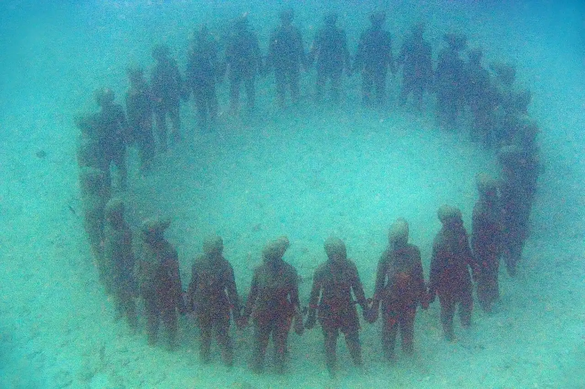

Sculptures sous-marines de Molinière
Saint George, Grenade · snorkeling, plongée

Premier parc de sculptures sous-marines au monde, ouvert en 2006 dans la baie de Molinière par le sculpteur Jason deCaires Taylor. Les statues posées sur le sable servent de support au corail.
- Lieu
- Saint George, Grenade
- Niveau
- Débutant
- Activités
- snorkeling, plongée
- Type d'eau
- Mer / océan
- Coordonnées
- 12.08, -61.77 (position approximative du secteur)
Dangers à connaître
- Passage de bateaux d’excursion : ne t’éloigne pas du groupe.
- Ne touche ni les sculptures ni le corail qui les colonise.
Le conseil d'Ocean Buddy
Quelques sculptures se voient en snorkeling, mais la plupart se découvrent mieux en plongée avec un guide local.
Ouvrir dans Ocean Buddy Télécharger sur l'App Store
Source : Fiche Ocean Buddy · septembre 2026 · à vérifier localement.